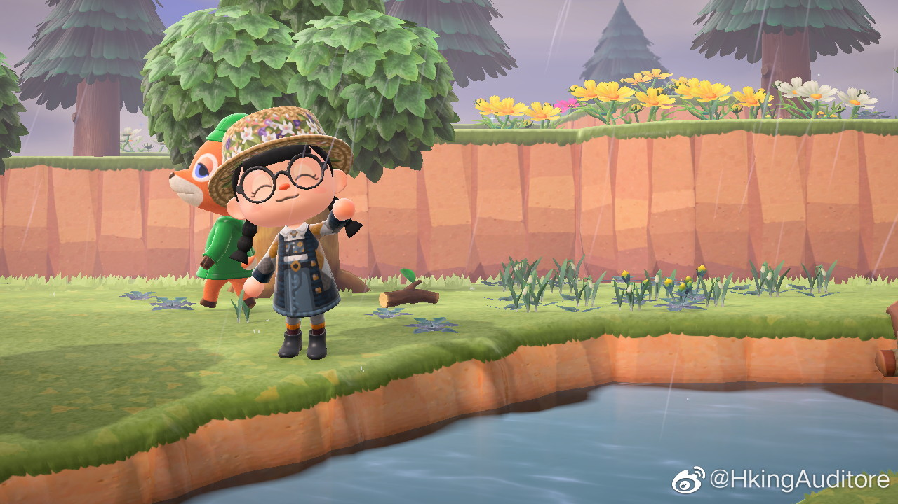

想干点有意思的事情列个flag逼乎更新至少两篇文章，看看能不能冲个一千粉把之前写的小小说改成动画，试试看能不能改成游戏颅内还有两篇小小说的构思，找个时间写了天气好就出去拍照把urp的多pass绒毛草的shader写了学虚幻4学houdini啊，好多就很奇怪，自己目的性越强结果就越难看，反而抱着玩的心态做的东西就有好结果大家晚安！
今天值得开心的事情：´_>`没有本来想投米哈游的，结果发现自己太菜了什么岗都干不了。修了一晚上的bug，想写个新功能结果unity写死了，难改得要命。但是我在动森里的衣服是真的好看，fine( ´_っ`) 